5570T CAR RADIO AND CAR TELEPHONE
- Path
- Descriptions > 55 ELECTRICAL EQUIPMENT > 5570 ACCESSORIES > 5570T CAR RADIO AND CAR TELEPHONE
- Kind
- system description
- Applies to
- all engines; all production periods
- Interactive page
- https://sloeber94.github.io/elrnDB-aGt/en/#/125000414
Applies to: all engines; all production periods
SPECIFCATIONS
The radio system is a connector in the B-CAN network and takes the name NRR (radio receiver connector), it is fitted in the dashboard in the top section and occupies a DIN space.
The NRR consists of:
MID LEVEL RADIO Radio with cassette player (CC) and code card
HIGH LEVEL RADIO AND HI-FI Radio with compact disc player (CD) and code card
SPEAKERS FOR MID/HIGH LEVEL VERSION
Front speakers:
- 2 tweeters in the door handle trim
- 2 165 mm woofers in the lower part of the doors
Rear speakers:
- 2 tweeters in the rear panel trim
- 2 165 mm woofers in the rear panels, lower section
SPEAKERS FOR HI-FI LEVEL VERSION
Front speakers:
- 2 coaxial 165 mm speakers in the lower part of the doors
Rear speakers:
- 2 165 mm coaxial speakers in the rear panels
- 1 box sub woofer with a 5 channel integrted amplifier located in the luggage compartment in the area of the left wheel arch.
RADIO AERIAL
Aerial with support fitted on the rear roof panel, coaxial cable and supply lead for aerial amplifier
PREPARATION FOR RADIO PHONE
Connecting bridge and special dual function aerial (radio / GSM)
MULTIPLE COMPACT DISC PLAYER (OPTIONAL ON MID/HIGH/HI-FI LEVEL)
1 multiple compact disc player with 10 discs, located in the luggage compartment in the area of the right wheel arch
STEERING WHEEL CONTROLS
The controls are located on the steering wheel spokes as follows:
- Right spoke - SRC, SCAN+, SCAN-
- Left spoke: VOLUME+, VOLUME-
For further details see [DF4110A}.
SPECIFICATIONS OF THE RADIO SYSTEM WITH CD PLAYER
RADIO SPECIFICATIONS
The main technical specification of the radio are:
- 2IC tuner with SHARX function
- Equalizer with seven (7) bands
- Integrated CD player
- CDC interface with BUS ASCI CD-Changer
- Integrated display
- CAN interface
- Telephone input
- BOSE speaker active control
- Preparation for remote control
- 30 CD title memory
- TPM memory (Track Program Memory) for 50 CDs with 10 tracks each
- Soft-Mute function
CAN bus functions:
- On control (for switching off logic)
- Outside display, see instrument panel connector display on DOT matrix
- Speed volume control
- Anti-theft code
- Lighting control
Electrical characteristics
- Operating voltage: from 10 to 16 V
- Nominal supply voltage: 13.5 V
- Minimum memory supply voltage: 5 V
- Operating voltage limit: 18 V for 1 hour; 24 V for 1 min
- Max. current absorption: 10A
- Stand by current: < 2 mA
- Stand by current 10 secs after first connection: 30 mA
- Output channes: 4
- Audio power 4x40 W
COMPOSITION OF THE RADIO SYSTEM (with CD reproduction)
The radio system is composed of a radio with a CD (compact disc) player which interfaces with the high level/HI-FI BOSE speakers and has a radio aerial or, if there is preparation for a radio phone, a dual function aerial.
It can operate a CD-Changer, if fitted, and can be operated through outside controls.
Front section
The diagram below illustrates the location of the controls on the front section.
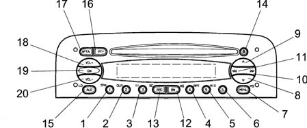
The controls are described below.
N. | Symbol | Function F1 | Function F2 | Tuner | CD player | C.D. Charg. |
|---|---|---|---|---|---|---|
Press key<1sec | Press Button>1sec | |||||
1 | 1 | 1 Preset recall | 1 Preset memorizing | 1 Preset recall | T1 :1TPM on/off2TPM memorizing | |
2 | 2 | 2 TPM on/off | 2 TPM memorizing/reset | 2 Preset memorizing | T2 TPM reset | |
3 | 3 | 3 Pause on/off | T3 :Pause on/off | T3 :Pause on/off | ||
4 | 4 | 4 Repeat on/off | T4: Repeat on/off | T4: Repeat on/off | ||
5 | 5 | 5 Mix on/off | T5: Mix on/off | T5: Mix on/off | ||
6 | 6 | |||||
7 | MENU | Access to menu | Scan preselection | 1 Access to menu 2 Preselection scan | Access menu | Access menu |
8 | V | Automatic backwards search | Automatic continuous backwards search | Automatic search | Previous track selection | Previous track selection |
9 | ▲ | Automatic forward search | Automatic continuous forward search | Automatic search | Next track selection | Next track selection |
10 | >> | 1 manual forwards search 2 next PTY prog. 3 next track selection 4 next CD selection | 1 manual forwards search 2 next PTY prog. 3 next track selection | 1 manual forwards search 2 next PTY prog. | Next track selection | Next CD selection |
11 | << | 1 manual backwards search 2 previous PTY prog. 3 start of track 4 previous CD selection | 1 manual backwards search 2 previous PTY prog. 3 start of track | 1 manual backwards search 2 previous PTY prog. | start of track | 1 previous CD selection 2 start of track |
12 | BN | Radio band selection | Travelstore (FMT) | 1 Sel. bands FM1,FM2,FMT,MW,LW 2 Travelstore (FMT) | Travelstore (FMT) | Travelstore (FMT) |
13 | SRC | In sequence: Tuner,CD,CDC | Source scan | 1 In sequence: Tuner,CC,CDC 2 FM/AM scan | 1 In sequence: Tuner,CD,CDC 2 CD scan | 1 In sequence: Tuner,CC,CDC 2 CD scan |
14 | Eject | CD eject | CD eject | CD eject | CD eject | CD eject |
15 | AUD | Select : bass,treble,balance,fader | Loudness on/off | 1 Select : bass,treble,balance,fader 2 Loudness on/off | 1 Select : bass,treble,balance,fader 2 Loudness on/off | 1 Select : bass,treble,balance,fader 2 Loudness on/off |
16 | PTY | PTY on /off | Display type of programme | 1 PTY on /off 2 Display type of programme | ||
17 | AF/TA | TA on /off | AF on/off | 1 TA on /off 2 AF on /off | 1 TA on /off 2 AF on /off | 1 TA on /off 2 AF on /off |
18 | VOL+ | Increases the volume by one step | Increases the volume rapidly | 1 Increases volume by one step 2 Increases volume quickly | 1 Increases volume by one step 2 Increases volume quickly | 1 Increases volume by one step 2 Increases volume quickly |
19 | ON/OFF | Mute on /off | 1 Radio on 2 Radio off | 1 Mute on / off 2 Radio on 3 Radio off | 1 Mute on / off 2 Radio on 3 Radio off | 1 Mute on / off 2 Radio on 3 Radio off |
20 | VOL- | Decreases the volume by one step | Decreases the volume rapidly | 1 Decreases volume by one step 2 Decreases volume quickly | 1 Decreases volume by one step 2 Decreases volume quickly | 1 Decreases volume by one step 2 Decreases volume quickly |
Radio with cd pin out
The diagram below shows the rear view of the radio and the location of the connectors.
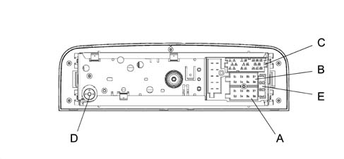
CONNECTOR A
Applies to: engines: 1.8 T.SPARK; all production periods
Pin | Signal |
|---|---|
A1 | CAN BUS (B) |
A2 | Amplifier input |
A3 | CAN BUS (A) |
A4 | NC |
A5 | 12 V switchable for Aerial |
A6 | NC |
A7 | IGNITION (+30) |
A8 | EARTH |
Applies to: all engines; all production periods
CONNECTOR B
Applies to: engines: 1.8 T.SPARK; all production periods
Pin | Signal |
|---|---|
B1 | RR+ (right rear speaker +) |
B2 | RR- (right rear speaker -) |
B3 | RF+ (rfght front speaker +) |
B4 | RF - (right front speaker -) |
B5 | LF + (left front speaker +) |
B6 | LF- (left front speaker -) |
B7 | LR+ (left rear speaker +) |
B8 | LR- (left rear speaker -) |
Applies to: all engines; all production periods
CONNECTOR C
Applies to: engines: 1.8 T.SPARK; all production periods
Pin | Signal |
|---|---|
C1 | NC |
C2 | NC |
C3 | NC |
C4 | NC |
C5 | NC |
C6 | 12V for amplifier |
C7 | Telephone NF in + |
C8 | Telephone NF in - |
C9 | Telephone mute |
C10 | Remote control signal A |
C11 | Remote control signal B |
C12 | Signal earth |
C13 | ASCI-BUS in (for CDC) |
C14 | ASCI-BUS out (for CDC) |
C15 | 12V permanent (for CDC) |
C16 | 12V switchable (for CDC) |
C17 | ASCI-BUS earth |
C18 | NF-Input earth (for CDC) |
C19 | Input L (for CDC) |
C20 | Input R (for CDC) |
Applies to: all engines; all production periods
CONNECTOR D
Aerial
CONNECTOR E
10 A fuse
Labels
There are 3 labels on the cover of the radio:
- Label with K7 - and ALFA product number (65x19 mm)
- 36 pin connector pin out details (50x54 mm)
- Laser warning
Every radio is supplied with:
- Radio passport with the serial number and code
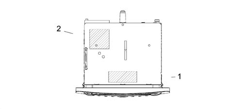
1 - Alfa product number label
2 - Pin out connections label
Dot matix display
Indications side:
- Side for fixed state information (AF, TA, TP, ...)
Information side:
- Side for display of frequency band, audio settings, CD track ...
RDS side:
- Side for display of frequency, programme name, graphics ...
Example of screen in tuner mode:
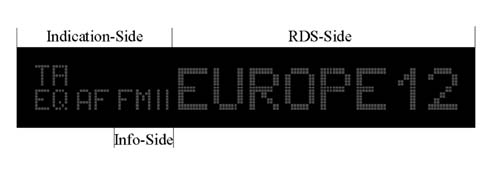
Example of screen in CD/CDC mode:
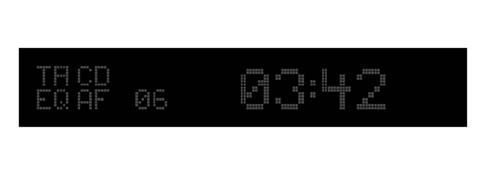
Example of screen for graphics equalizer:
OPERATION OF RADIO SYSTEM WITH CD PLAYER
Main functions
Switching the equipment on using the on button
The equipment is switched on by pressing the ON button for more than 20 msecs. The display responds immediately (within 1 sec., last source indication), the audio can be heard within 2.5 secs.
To switch the equipment off, press the ON button for longer than 1 second.
On/off logic, time mode
Automatic switching off 20 minutes after the ignition has been switched off. The radio can be switched on, for a futher 20 minutes, after it has been switched off automatically, by pressing the On button.
Roger beep signal
Frequency: 2kHz, approx: 150ms.
Auditory signal volume:
- Listening volume < 30: auditory signal volume = 30 (fixed auditory signal volume)
- Listening volume 30: auditory signal volume paralle to the listening volume
Last status
After switching the radio on / off, it continues to operate with the following settings. If the volume level was above 30 steps, the equipment will resume playing at level 30.
Cd eject
To eject the disc, press the eject button Δ (only if the radio is on). The disc will be ejected and the source listened to prior to playing the CD will be heard.
If the CD is not removed from the radio, the radio will recharge it 30 secs later remaining in tuner mode.
If the user reinserts the CD ejected from the radio without having removed it first, the radio will remain in tuner mode
Switching source
To access and change available sources, press the SRC button.
Available sources | CD inserted | CDC with CDs inserted |
|---|---|---|
TUNER,CD, CDC, TUNER, ... | X | X |
TUNER, CD, TUNER, ... | X | |
TUNER, CDC, TUNER; ... | X | |
TUNER |
At each change of source, the new source is displayed for 2.5 secs:
.
_ _ _ _ T U N E R _ _ _ (RDS side)
_ _ _ _ C D _ _ _ _ (RDS side)
_ C D - C H A N G E R _ (RDS side)
.
Whilst the message is displayed, the last source is played.
If no CDs are inserted or the CD CHANGER Is not connected, the following is displayed:
.
_ _N O C D _ _ (RDS side)
.
Alternative frequency search
To activate / deactivate the alternative frequency search for the station selected, press the AF/TA button for a while (> 1sec). The letters RDS will still be shown on the display (if available) and the 'AF' symbol will be displayed if the AF function has been activated.
If the radio is in AM mode when the AF/TA button is pressed, the tuner mode will move on to the FM1 at the last station selected.
Manufacturer's pre-defined setting: AF on
Traffic information
To activate / deactivate the traffic news function, press the AF/TA button briefly (<1 sec.).
Information on Display Indication Side | Station which is broadcasing traffic information | Traffic information function activated |
|---|---|---|
"TP" | X | |
TA | X |
If the traffic news function is activated, but the radio station selected does not broadcast traffic information, an auditory message (beep) will be sounded every 30 secs.
If the broadcaster is on the AM band and the AF/TA button is pressed briefly (<1 sec), the tuner will tune into the last FM station listened to. If the station selected does not broadcast traffic information, the search will commence and an auditory signal will be produced.
If the source activated is CD or CDC or the telephone or mute functions (volume 0) are activated and the AF/TA button is pressed briefly (<1 sec), the traffic information function will be activated and traffic bulletins will be transmitted. If the last source selected was the AM radio, the tuner will switch to FM1 for the last broadcaster selected. If the station selected does not broadcast traffic information, the search will commence
Traffic news volume:
- Listening volume < 30: Traffic news voume = 30 (fixed volume)
- Listening volume 30: Traffic information volume equal to the listening volume +1
If the vehicle leaves the area covered by the radio station tuned into, this is what happens:
- Tuner Mode: an auditory signal is produced every 30 secs
- CD or CDC Mode or telephone or mute function activated: a tuning search is launched (there is no visual or auditory information)
If the AF/TA button is pressed briefly (<1 sec.) during the transmission of a traffic bulletin, the news will no longer be transmitted even if the traffic news function (TA) continues to be activated.
If a traffic news flash is being transmitted, the following will be shown on the display:
.
_I N F O _ T R A_ (RDS side)
.
Whilst a traffic bulletin is in progress, the outside display will show the latest information received.
General information on traffic news:
- During a traffic bulletin the audio function can be activated using the 'AUD' button.
- There are no separate audio values, in other words the audio will be adoped even after the traffic message.
- The alteration of the volume during a traffic bulletin will not be confirmed on the display. The value regulated is only valid for the individual bulletin.
- During a traffic bulletin it is possible to recall a programme using the preselection buttons (the traffic bulletin will only be deactivated if in radio mode).
- It is possible to change source during a traffic bulletin using the SRC button (the traffic bulletin will be deactivated).
Setting pre-defined by the Manufacturer: TA off
Pty31
The PTY31 process is similar to the traffic information function, but there is no possibility of deactivating it.
Mode for europe / south america (n.b. function not described in owner's handbook)
The customer can activate the two modes, in order, by pressing the BN button and the preselection button 1 simultaneously whilst the radio is on. The mode selected will be shown on the radio for 2 seconds.
For example:
.
_ _ _ E U R O P E _ _ _ (Information side)
_ S U D _ A M E R _ _ _ (Information side)
.
Setting pre-defined by the Manufacturer: EUROPE
Autostore (automatic programming)
Press the BN button for a whilst ( >1 sec, followed by auditory signal) to activate the Autostore function. With this function the radio programmes the six stations with the strongest signal in decreasing order of intensity for the signal on the FMT frequency band. If the traffic information function is activated, only stations broadcasing traffic information are programmed.
The following information is shown on the display during the automatic programming process:
.
_ A - S T O R E (RDS side)
.
If the autostore process is activated in CD or CDC mode or the source is changed, this process will take place in the background.
Each station is only programmed once
Exception: for regional programmes the second digit of the Pl cannot be taken into consideration during the autostore process, so that the same broadcater could be programmed with 2 different Pl codes
To interrupt the automatic programming process, press the BN button again (the last station selected before the programming process was started will be selected).
At the end of the autostore function, the system will automatically activate the 1st station preselected on the FMT level. If less than six stations can be received, the preselection buttons remaining free will be represented by four horizontal lines for 2 secs and the last broadcaster listened to will be reproduced.
.
_ _- - - - _ _ (RDS side)
.
The word 'SEARCH' will be shown on the outside display during the autostore process.
General information when the autostore function is activated:
- At the start of the autostore function, all the other functions and menus are disabled;
- Pressing a button with a function for the radio (e.g. PTY, >>, <<, preselection buttons) will interrupt the autostore function, the last station listened to before the start of the process will be tuned into and the function associated with the button selected will be carried out;
- Pressing the TA button during the autostore process will interrupt the process, the TA function will be activated / deactivated and a new autostore process will be initiated.
- The autostore process will not be interrupted by changing source.
Mute function
Press the ON button briefly (< 1 sec.) to activate/deactivate the Mute function. If the Mute function is activated, the volume will decrease in 800 msecs. from the current volume to the value 0e the display will show:
.
- _ M U T E _ _
.
If the Mute function is deactivated, the volume will increase by 0 to the value previously listened to in 800 msecs. and the display will show whatever was displayed before the activation of the Mute function.
General information when the Mute function is activated:
- Pressing the volume button deactivates the Mute function and alters the listening volume
- All the functions and the menu can be used
- If a traffic bulletin is received (with the TA function activated) or a PTY31 message is received, the activated Mute function will be be ignored
Soft mute function
The Soft Mute function is activated if one of the 6 preselection buttons is used
If one of these buttons is pressed, the volume decreases with a soft mute effect. The ramp is set to reach volume 0 from the current volume in one second
If the button is pressed for:
<1sec. the moment it is released the volume will increase with a soft demute This ramp is set to reach the current volume the current volume from 0 in 500 msec.
pressing the button for a second, an auditory signal is produced (station programming). At the end of the auditory signal, the volume is the current volume (no soft demute).
Outside display mode (n.b. function not described in the owner's handbook)
It is possible to select between two modes by pressing the BN button and preselection button 2 simultaneously within 5 secs of switching the radio on. The two modes are:
- RDS display: (RDS-name on, NAME-on) The RDS name of the broadcaster selected (if available) is shown on the outside display in place of the frequency
- Frequency display: (RDS-name off, NAME-off) The outside display always shows the frequency of the radio station
The radio shows the mode selected for 2 secs.
For example:
.
- N A M E _ O N _ (RDS side)
- N A M E _ O F F (RDS side)
.
Setting pre-defined by the Manufacturer: NAME-ON
Frequency mode (n.b. function not described in the owner's handbook)
In this mode the radio always shows the frequency of the station selected. To activate this mode, press the AUD button for 8 secs and then press preselection button 5. 2 secs and 8 secs after pressing the AUD button, an auditory signal will be produced. After the second auditory signal, press button 5 briefly (an auditory signal will be produced) to enter the frequency mode.
To exit the frequency mode, switch the radio off and then on again.
Auto switching on
The radio receives the switching on signal via the B-CAN line
If the radio is on and the engine is switched off, the radio switches off.
If the radio is off and the engine is started up:
- If the radio was on before the engine was started, it remains on
- If the radio was off before the engine was started up
Name-rds mode (south american market only)
Briefly (<1 sec) pressingthe AF/TA button activates / deactivates the Name-RDS function:
- Name -RDS on: the display shows the name of the broadcaster (if available) instead of the frequency
- Name -RDS off: the display always shows the frequency of the broadcaster
The radio shows the mode selected for 2 secs, e.g.:
.
_-_RDS_ON_ (RDS side)
_ RDS_OFF_ (RDS side)
.
If the Name-RDS mode is off, then the AF function is also off
Setting pre-defined by the Manufacturer: RDS ON
Audio adjustments
If 'BOSE' amplifier is connected to the radio, all the audio curves depend on the 'BOSE' specifications
Volume
The volume can be adjusted in 67 steps from VOL 0 to VOL 66 using the VOL + and VOL - buttons.
The volume level appears on the display for 4 seconds.
Example:
.
_ _ V O L _ 2 3 _ (Information side)
.
The volume screen disappears as soon as another function is selected.
If the volume level is changed during a traffic news bulletin, then this setting only remains valid for the current traffic bulletin. Later on, the equipment will adjust to the original level. If the traffic news bulletin ends whilst the volume is being changed, then the level will continue to change starting from the setting activated prior to the transmission of the traffic bulletin (including the display information).
Speed volume control
Information from bus CAN.
Volume controlled in 10 steps stored in the EEPROM
The table below shows the dB increase in relation to the vehicle speed
In dB | Switching level during acceleration [Km/h] | Switching level during vehicle braking [Km/h] |
|---|---|---|
0 | - | 25 |
1.2 | 30 | 45 |
2.4 | 50 | 65 |
3.6 | 70 | 85 |
4.8 | 90 | 105 |
6 | 110 | 125 |
7.2 | 130 | 145 |
8.4 | 150 | 165 |
9.6 | 170 | 185 |
10.8 | 190 | 200 |
12. | 210 | - |
The speed volume control can be activated / deactivated via the menu in all modes (tuner, CD, CDC).
Bass, treble, balance and fader
After the first brief press (< 1 sec.) of the 'AUD' button, the current bass setting is displayed.
Example:
.
_ _ _B A S S _ _ (RDS side)
_ + 6_ _ (Information side)
.
The setting is changed using the ^ and v buttons.
Control range: ± 12 dB in steps of 2 dB
Display: -6...0...+6
No stop at '0'.
If the 'AUD' button is pressed a second time, the current treble level setting is displayed.
Example:
.
_ _ T R E B L E_ _ (RDS side)
_ - 2 _(Information side)
.
The setting is changed using the ^ and v buttons.
Control range: ± 12 dB in steps of 2 dB
Display: -6...0...+6
No stop at '0'.
By pressing the 'AUD' button for a third time, the current balance setting level is displayed.
For example:
.
_ B A L A N C E _ (RDS side)
_ L + 9_ (left: 0dB, right: <-20 dB information side)_
_ L - R_ (left: 0dB, right: 0 dB information side)
_ R + 9_ (left: <-20dB, right: 0 dB information side)
.
The setting is changed using the ^ and v buttons.
The dimming according to the step selected is 1.2, 2.4, 3.6, 6.0, 8.4, 10.8, 14.4, 18.0, 21.6 dB.
No stop at 'L=R'.
If the 'AUD' button is pressed for a fourth time, the current fader setting level is displayed.
For example:
.
_ F A D E R _ (RDS side)
_ F + 9 _ (rear: < -30 dB, front: 0 dB information side)
_ F - R _ (rear: 0dB, front: 0 dB information side)
_ R + 9 _ (rear: 0dB, front: < -30 dB information side)
.
The setting is changed using the ^ and v buttons.
The dimming according to the step selected is 1.2, 3.6, 6.0, 8.4, 10.8, 14.6, 19.2, 24.0, 31.2 dB.
No stop at 'F=R'.
If the 'AUD' function is deactivated, the value adjusted is memorized and the equipment activates the last mode used:
- Automatically, 8 secs. after the last audio adjustment.
- By initiating an action or (de-)activating a function which requires the display of new information.
- When a new function or mode is launched (for example a TA broadcast, a telephone mute or when a CD is inserted)
If a BOSE amplifier is connected to the radio, the bass and treble function is reduced to conform with the BOSE specifications.
Setting pre-defined by the Manufacturer: Bass, Treble, Balance, Fader= 0.
Loudness
This function is only available if the BOSE amplifier is not connected to the radio. If an amplifier is connected to the radio, the loudness will be fixed according to the BOSE specifications.
To activate / deactivate the loudness function, press the 'AUD' button for more than a second. The Loudness mode will appear on the display for 4 seconds.
For example:
.
_ _ L D_ O N _ (RDS side)
_ L D_ O F F _ (RDS side)
.
The volume screen disappears as soon as another function is selected.
The loudness curves are stored in the EEPROM.
Setting pre-defined by the Manufacturer: Loudness off.
Lighting adjustment
The radio lighting is controlled via the NBC CAN as illustrated in the table below; the radio lighting is red for the buttons and the LCD matrix backlight.
Input | Output | |||
|---|---|---|---|---|
Ignition + 15 | Signal Lighting | Radio | Button light ON- | Button and LCD light |
Off | Off | Off | Off | Off |
Off | Off | On | On | On |
On | Off | Off | On | Off |
On | Off | On | On | On |
On | On | Off | On | Off |
On | On | On | On | On |
Tuner mode
Note: The receiver is designed to be compatible with the European market and the South American market.
Band | Europe | South America |
|---|---|---|
FM | 87.5 - 108 MHzauto / man: steps of 100 / 50 kHz RDS: steps of 100 kHz Deenfasi: 50 μsec | 87.7 - 107.9 MHzauto / man: steps of 100 / 100 kHz RDS: steps of 100 kHz Deenfasi: 75 μsec |
MW | 531 - 1602 kHzauto / man: steps of 9 / 9 kHz | 530 - 1620 kHzauto / man: steps of 10 / 10 kHz |
LW | 153 - 279 kHzauto / man: steps of 9 / 3 kHz | No LW |
Display
The name (RDS station) or the frequency (non RDS station) of the station selected appears on the display and the frequency level selected appears on the indications side.
For example:
.
E U R O P E _ 1 (RDS side)
_ _ 1 0 1.9 _ _ (RDS side)
F M 1 (Information side)
F M 2 (Information side)
F M T (Information side)
M W _ (Information side)
L W _ (Information side)
.
Frequency band switching
By pressing the BN button briefly (< 1 sec.), it is possible to activate the following frequency bands in order FM 1, FM 2, FM T, MW, LW, FM 1,.... The last station selected on the respective ban will be tuned into.
The new frequency band will be shown on the information side of the display
If the station is programmed, 2 seconds later the station number will be displayed on the information side for 5 secs.
Example:
.
_ P 1_ (Information side)
.
Pre-selection buttons (from 1 to 6)
Pre-selections:
- 18 x FM (6 x FM 1, 6 x FM 2, 6 x FMT (STORE))
- 6 x MW
- 6 x LW
- 6 x type of PTY programme (FM mode only)
To recall the desired pre-selected station, select the frequency band desired and then press the relevant pre-selection button briefly (< 1 sec.).
The preselection number will appear on the display (rather than the band, e.g. FM2) on the information side and the frequency will appear on the RDS side for 2 secs before the frequency band and the name of the RDS appear (if available0.
If the Pl code cannot be received on the frequency pre-set for a button, the radio will start to search for this Pl on another frequency as soon as the vehicle leaves the area covered by the first frequency.
The following appears on the display:
.
_ S E A R C H _ (RDS side)
.
If the Pl memorized cannot be received on any frequency, after having searched the entire, the radio will tune into the programmed frequency.
The station tuned into will be programmed by pressing the preselection button for a while ( =1 sec). The system always programmes the frequency and the Pl code.
The programming process is confirmed by an acoustic signal.
Automatic tuning
Press the up / down button (^/v) briefly (<1 sec.) to start the automatic tuning of the next station that can be received in the direction selected. If the button is pressed for longer (>1 sec) the rapid search will start. Once the first station with good reception is tuned into, the tuner will stop for 1 sec (in mute) before the rapid search continues. When the button is released, the tuner stops at the next station which can be received.
If the traffic news function is activated, the system only searches for stations which broadcast traffic news.
If the PTY function is activated, the system will only search for PTY stations.
During the search, the display alternately shows the type of the programme and the word SEARCH (every 2 secs).
If the frequency is the same as the frequency programmed in the pre-selection on the same band (FM1, FM2, FMT, MW, LW), then the pre-selectino number will appear on the display for 5 secs.
The outer display will show the word SEARCH during the automatic search.
Manual tuning
To start the gradual tuning in the direction selected, press the left / right button (<</>>) briefly (< 1 sec.). If the button is pressed for longer (>1 sec) then the rapid function is carried out as long as it is pressed.
If the PTY function is activated, then it must be deactivated in order to use this function.
If the AF function is activated, then it must be deactivated in order to use this function.
If the frequency is identical to the preselection frequency programmed on the same band (FM1, FM2, FMT, MW, LW) then the preselection number will appear on the display for 5 secs.
Fm / am - scan
Press the SRC button for a while (>1 sec. followed by auditory signal) to start the scan of stations on the current frequency band (FM, MW, LW). Each station found will be played for 10 secs. and its name or frequency will flash on the display. During the search (min. 2 secs.) the following will appear on the display:
.
_ F M - S C A N (RDS side)
_ A M - S C A N (RDS side)
P T Y - S C A N (RDS side)
.
If the traffic news function is activated, the system will only search for stations which broadcast traffic news.
If the PTY function is activated, the system will only search for PTY stations.
At the start of the SCAN, all the other functions and the menu are cancelled.
The word SEARCH will appear on the outer display during the SCAN
Deactivating FM / AM search
- To continue the reproduction of the station currently sought, prss the SRC button again. This operation is also valid even if the equipment is switched off whilst the FM / AM search function is in progress.
- By pressing the up or down button.
- By pressing a pre-selectino button the station programmed is tuned into
- By activating the automatic memory
- By activating / deactivating the PTY
- By changing the FM or band level
- By activating the AUD or MENU the current station will continue to be reproduced
- If the FM / AM scan finds a station transmitting traffic news and the traffic news function is activated, the search will be cancelled.
- Inserting a CD
If no station is selected, the search function will be deactivated after the frequency band scan. The reproduction of the station selection previously will be resume
Pre-selection scan
Press the MENU button for a while (>1 sec) to start the preselection scanning on the current frequency band:
- FM: FM1- 1, FM1- 2, ..., FM1- 6, FM2- 1, FM2- 2, ... FM2- 6, FMT1, FMT2,..., FMT6
- MW: MW 1, MW 2, ..., MW 6
- LW: LW 1, LW 2, ..., LW 6
Each preselection will be reproduced for 10 secs and the name or the frequency will flash on the display, if the range intensity is a minimum of 25dBV otherwise it will be omitted. The following appears on the display (2 secs) during the time a preselection is changed:
.
_ _ S C A N _ _ (RDS side)
.
In the first 2 secs during which a preselection station is reproduced, the information side shows the current frequency band and in the remaining time the preselection number is shown on the information side.
If the traffic news function is activated, the system will only search for stations which broadcast traffic news.
All the other functions and the menu will be cancelled at the start of the search.
Deactivating pre-selected stations scanning
- By pressing the SRC button the radio station currently listened will continue. This operation is also valid if the equipment is switched off whilst the scanning is activated.
- By pressing the up or down button.
- By pressing a pre-selection button
- By activating the automatic memory
- By activating the PTY
- By changing the source
- By changing the FM level or the band
- By activating the AUD or MENU the current station will continue to be reproduced
- If the preselected scanning tunes into a station which is broadcasting a TA message whilst the TA function is activated, then the scanning is aborted.
- Inserting a CD
If no pre-selection is made, the reproduction of the station selected will be resumed.
Programme type selection pty
To activate the PTY function, press the PTY button briefly (< 1 sec.). If the PTY function is activated, the 'PTY' symbol appears on the display
.
P T Y (information side)
and the last type of programme listened to will appear on the RDS side of the display.
.
Examples of types of programmes:
.
_ _ _P O P _ _M_ (RDS side)
_ _ R O C K _ M_ (RDS side)
_ W E A T H E R_ (RDS side)
C H I L D R E N_ (RDS side)
_ T R A V E L_ (RDS side)
_ H O B B I E S_ (RDS side)
_ _ J A Z Z _ _ (RDS side)
_ O L D I E S _ (RDS side)
_ _ N E W S _ _ (RDS side)
_ _P O P _ _ (RDS side)
_ _ S P O R T _ (RDS side)
_ C U L T U R E (RDS side)
.
The name of the station or the frequency is displayed after 2 secs.
To change the PTY type, press the << / >> buttons or one of the 6 preselection buttons. If the display shows the frequency of the name of the broadcaster, pressing the << / >> buttons displays the current type of programme.
To memorize the current type of programme on one of the 6 preselection buttons, press the preselection button for a while (>1 sec).
The programming is confirmed by an acoustic signal.
To search for a station with this programme, see 'Automatic tuning and FM/AM scan'. If no station is available with this type of programme, the system will produce an auditory signal, the station selected previously will be reproduced and the following will appear on the display:
.
_ N O - P T Y _ (RDS side)
.
To deactivate the PTY function, press the PTY button again (< 1 sec.).
Whilst a PTY message appears on the display, the outer display continues to show the latest information (frequency, broadcaster name, CD time)
Manufacturer's pre-defined setting: PTY off.
Station pty type of programme check
Press the PTY button for a while (>1 sec) to activate the check on the type of programme. After the acoustic signal, the type of programe offered by the station currently reproduced will appear on the display. If the current station has no PTY code, then the following will appear on the display:
.
_ N O - P T Y _ (RDS side)
.
After 5 secs the RDS name or the frequency of the station tuned into will appear on the display.
Scrolling tranmissions
It is possible to receive different programmes on the same network and carry out scrolling (FM only)
For example: NDR1,NDR2,NDR3,NDR4,N-JOY
To activate this function, press the AF button briefly (>1 sec) to activate the AF function.
Then the user can begin scrolling using the >>/<< buttons.
Menu
Menu button
To activate the menu function, press the MENU button quickly (1 sec). The following appears on the display:
.
_ _ _ _ M E N U _ _ _ _ (RDS side)
.
After 2 secs., the following will appear on the display:
.
M E N U (indications side)
_ E Q - O F F _ (RDS side with menu function first)
.
To exit the Menu function, press the MENU button again.
Function selection
Press the up / down button (^/v) to change the menu function to be altered. The following functions can be used:
- Activating / deactivating equalizer
- Equalizer settings (only if the equalizer is activated)
- Activating/deactivating alternative frequency regional function
- CD display setting
- CDC display setting (only if a CD-Changer is connected)
- Tuner sensitivy adjustment
- Activating/deactivating speed volume control
- Allocation of names to CDs (only if CD mode is activated)
- Telephone adjustment
- Hicut on/off
The current status of the function selected appears on the display (see the points which follow).
Activation (on) / deactivation (off) of balancer
This function is only possible if no BOSE amplifier is connected to the radio
The user can use this function to activate or deactivate the integrated balancer. If this function is not activated, the user can alter the audio settings only by changing the bass and treble. If one balancer is activated, it can make use of several settings to modify the acoustic curves:
- PRESET: specific sound for the vehicle
- USER: specific sound for the vehicle plus 7 band equalizer which can be set by the user
- Rock Curve: fixed audio for rock tracks
- Jazz Curve: fixed audio for jazz tracks
- Classic Curve: audio for classic tracks
If this function is selected, one of the last three possibilities is shown on the display (last setting):
.
_ P R E S E T _ (RDS side)
_ U S E R _ (RDS side)
_ R O C K _ (RDS side)
_ J A Z Z _ (RDS side)
_ C L A S S I C _ (RDS side)
.
To change this function, use the << / >> buttons. If one of the equalizers is activated, the 'EQ' symbol appears on the indication side of the display.
Setting pre-defined by the Manufacturer: PRESET
User equalizer setting
It is only possible to select this function if one of the equalizers has been activated.
The last equalizer used appears on the display:
.
_ E Q _ S E T _ (RDS side)
.
To change the equalizer settings, press the << / >> button. A bar chart with 7 bars appears on the display. Each bar represents a frequency for the left channel and the right channel. The following frequencies can be selected using the << / >> button (the bar selected last starts to flash):
- 1.bar: 64Hz
- 2.bars: 160Hz
- 3.bars: 400Hz
- 4.bars: 1000Hz
- 5.bars: 2500Hz
- 6.bars: 6250Hz
- 7.bars: 15625Hz
To change the gain in the frequency selected, press the ^/v button. The gain can be changed from -6dB to +6dB in steps of 2dB (7 steps).
To memorize these settings, press the MENU button again. The following will appear on the display:
.
_ E Q _ S E T_ (RDS side)
.
Setting pre-defined by the Manufacturer: all gains from 0dB.
Regional function
If this function is selected one of the possibilities which is the current setting will appear on the display:
.
_ R E G - O N _ (RDS side)
_ R E G - O F F (RDS side)
.
Use the << / >> buttons to change this function.
Manufacturer's pre-defined setting: REG-off.
Cd display function
If this function is selected, the following will appear on the display:
.
_ C D - D I S P _ (RDS side)
.
Use the << / >> buttons to change this function. The current setting, which is one of the following two possibilities, will appear on the display:
.
_ _ T I M E _ _ (RDS side)
_ _N A M E _ (RDS side)
.
Setting pre-defined by the Manufacturer: Time
Cdc display function
This function can only be selected if a CD-Changer is connected. The following appears on the display:
.
C D C - D I S P_ (RDS side)
.
Use the << / >> buttons to change this function. The current setting, which is one of the following two possibilities, will appear on the display:
.
_ _ T I M E _ _ (RDS side)
_ _ C D - N R _ (RDS side)
.
Setting pre-defined by the Manufacturer: Time
Adjustment of tuner sensitivity
If this function is selected, one of the two possibilities, which is the current setting, appears on the display:
.
_ S E N S - D X (RDS side)
_ S E N S - L O (RDS side)
.
Use the << / >> buttons to change this function.
Setting pre-defined by the Manufacturer: SENS-DX
Speed volume control function
If this function is selected, one of the two possibilities, which is the current setting, will appear on the display:
.
_ S V C - O N _ (RDS side)
_ S V C - O F F _ (RDS side)
.
Use the << / >> buttons to change this function.
Setting pre-defined by the Manufacturer: SVC-OFF.
Cd naming function
This function can only be selected if a CD is inserted. The following appears on the display:
.
_ C D - N A M E _ (RDS side)
.
Use the << / >> buttons to activate this function. If the CD already has a name, this will appear on the display.
Example:
.
_ M A D O N N A _ (RDS side)
.
If the CD does not have a name, then eight small lines will appear on the display:
.
_- - - - - - - -_ (RDS side)
.
If no memory is available for a new name, then the first name in the memory will be displayed.
To change the name or to give the new CD a name, press the <</>> button. Press << or >> again to select the position of the letter to be changed. Use the ^/v button to select/alter the letter. To memorize the name, press the MENU button again. The following appears on the display:
.
_ C D - N A M E (RDS side)
.
To cancel a CD name entered, press button 2 (CRL) for 2 seconds after having activated the CD-name function
.
O N E _ C L R (RDS side)
.
After which the CD-name mode appears again.
To cancel all the names, press preselection button 2 (CLR) for 8 seconds after having activated the CD-name function. An acoustic signal is produced between the 2 and 8 seconds and the following appears on the display for 2 seconds:
.
A L L _ C L R (RDS side)
.
After which the CD-name mode appears again.
Telephone adjustment
In this function the customer can activate (setting 1 - 66) or deactivate (off setting) the telephone audio mute function
If the telephone mute function is activated, the user can select an initial telephone volume. The volume can be adjusted in 66 steps from VOL1 to VOL66 using the VOL+ and VOL - buttons
If this function is selected, the following will appear on the display:
.
_ _ P H O N E _ (RDS side)
.
To activate this function, press the << / >> buttons. The display shows the last setting. The current setting is one of four possibilities:
.
_ _ _ O F F _ _ _ (RDS side)
_ _ P H O N E _ 2 _ (RDS side)
_ _ P H O N E _ 23 _ (RDS side)
.
Setting pre-defined by the Manufacturer: OFF.
Hicut adjustment
The customer can use this function to activate or deactivate the Hicut function (dynamic reduction in high sounds for RF signal).
If this function is activated, the display will show one of the 2 possibilities for the current status:
.
_ H I C U T _ O N (RDS side)
_ N O _ H I C U T (RDS side)
.
To change the status, use the << / >> buttons.
Setting pre-defined by the Manufacturer: Hicut OFF.
Cd / cdc mode
The nrr with cd has a cd integrated with the radio and the possibiilty of 1 cd-changer
The integrated CD player has the following functions:
- Motorized loading
- Motorized ejection
Activation of the cd / cdc mode
Activating the CD mode:
- Insert a CD (if the radio is off, it comes on
- Press the SRC button until the CD mode is activated (only if a CD is inserted)
If a CD is inserted, the indications side of the display will show the 'CD' symbol and the system will change source and activate the reproduction of the CD.
Activation of the CDC mode:
- Press the SRC button until the CDC mode is activated (only if a CDC with at least one CD is connected).
Display
If the CD or CDC mode is activated, the following will appear on the display:
Example of track information:
.
_ 0 5_ (information side)
.
Example of time information if this function has been selected from the menu:
.
_ _ 0 3:4 2 _ _ (RDS side)
.
Example of information for CD name function for CD mode if this function has been selected from the menu:
.
_ _ M A D O N N A (RDS side)
.
Example of CD number information for CDC mode if this function has been selected from the menu:
.
_ _ C D _ 0 4 _ (RDS side)
.
If the CD name mode is selected and no CD name has been memorized, the time information will appear on the display.
Integrated cd error
If the CD played in the integrated CD player is not legible, then the following message will appear on the display for 2 secs:
.
C D - E R R O R (RDS side)
.
After which:
- The CD will be ejected
- the source will be changed to the source listened to before the CD mode selection
Cd-changer error:
The following 4 errors are possible
If the changer is not inserted then the display will show
.
_ _ N O _ C D _ (RDS side)
Until the user changes source.
If the CD selected is not legible (CD not present in the selected position or CD inserted the wrong way)
After the CD number has been displayed, the display will show the following for 2 secs:
_ _ N O _ C D _ (RDS side)
After this period, the next CD is selected. After all the CDs have been selected and no CDs are available, 'NO CD' will appear on the display until the user changes source.
If there is a reading error, the following will appear on the display for 2 secs:
.
C D - E R R O R (RDS side)
.
After this period the next CD is selected. After all the CDs have been selected and no CDs are available, 'NO CD' will appear on the display until the user changes source.
The CD is a CD-ROM
The next CD is selected without any information on the display.
Track selection forward/backwards
Press the ^ button to select the next track and the v button to select the previous CD track. Keep the button pressed for continuous track selection (>1 sec).
If the v button is pressed whilst the track is playing for more than 3 secs. (depending on the CD-Changer), the track will start again.
Track rewinding/forwarding (in cd mode only)
Press the << button to rewind and the >> button to forward the track selected. For the rapid function, keep the button pressed (5 secs).
If the name display mode is activated, the display mode moves onto the time display. Two seconds after the button is pressed for the last time, the display mode returns to the name display mode.
Cd selection (for cdc mode only)
Press the << button to select the previous CD and the >> button to select the next CD.
If the time display mode is activated (CDC display function) the display mode moves on to the CD number display mode. Two seconds after the button is last pressed the display mode returns to the time display mode.
Track rewinding/forwarding (only for cdc mode)
Press the << button for rewinding and the >> button for forwarding the track selected by 1 sec. Keep it pressed (5 secs) for the rapid function.
If the number display mode is activated (CDC display function) the display mode moves onto the time display. Two seconds after pressing the button, the display mode returns to the name display mode.
Scan function
Pressing the SRC button for a while (>1 sec) starts the search function.
Each CD track is played for 10 secs, whilst the track is reproduced, the display alternately shows the CDC selected (CD-NAME, time or number) and the word SCAN for 2 secs each:
.
_ _ S C A N _ _ (RDS side)
.
If the SCAN function is activated, the Repeat and Mix functions are deactivated.
The search order is:
CD Mode:
- From the track reproduced to the last track on the CD
- at the end of the CD it returns to the first track on the CD (and so on until the user interrupts the function)
CDC Mode:
- From the track reproduced to the last track on the CD
- Changing the CD and playing the CD from the beginning to the end (and so on for all the CDs in the changer and until the user interrupts the function)
Deactivation of CD search:
- Press the SRC button again to continue the reproduction of the track currently sought. This is also valid even if the equipment is switched off whilst the CD search is activated:
- Pressing the up or down button (if they are pressed simultaneously, the track will be omitted).
- Pressing a preselection button (mode 1-5 DC, mode 3-5 CDC)
- Pressing the SRC button
- Activating AUD
- If the traffic information function is activated and the station currently tuned into is broadcasing a traffic bulletin, the search will be aborted
- Activating the MENU
Tpm
Quickly (<1 sec) pressthe preselection button to activte the TPM function (Track Program Memory). If the function is activated, the following will appear on the indications side of the display for 2 secs:
_T P M_O N_ (RDS side)
If no track has been programmed, the TPM function cannot be activated.
After having played a track, the display will show 'TPM ON' again for 2 seconds
To programme tracks, select the desired track and press preselection button 1 for = 1 sec., an auditory signal will be produced and the following will appear on the display:
.
_ S T O R E D _ (RDS side)
.
Repeat this procedure for all the tracks.
Note: only between 1 and 40 tracks can be memorized
To cancel a single TPM track, select the track by pressing the ^/V buttons whilst the TPM function is activated. Then press preselection button 2 (CLR) for 2 secs. The TPM function will be deactivated. An auditory signal is produced and the following appears on the display:
.
_ T R _ C L R _ (RDS side)
.
To cancel the TPM function for a CD, insert the desired CD and activate the TPM function. Then press preselection button 2 (CLR) for 4 secs. An auditory signal is produced after 2 secs and 4 secs, the TPM function is deactivated and the following appears on the display:
.
_ C D _ C L R _ (RDS side)
.
To cancel the TPM function for all CDs, activate the TPM function and then press button 2 (CLR) for 8 secs (TPM on or off). An auditory signal is produced after 2 secs, 4 secs and 8 secs and the TPM function is deactivated and the following appears on the display:
.
_ T P M _ C L R (RDS side)
.
Pause function
Press preselection button 3 to activate the pause mode for reproducing a CD or CDC. The following appears on the display:
.
_ _ - P A U S E _ _ (RDS side)
.
To resume reproduction, press preselection button 3 again.
The pause function is off after a change of source.
Repeat function
Press preselection button 4 to keep repeating the track currently selected. The following information appears on the display for 2 secs:
.
_ R E P E A T _ (RDS side)
.
To deactivate the repeat function, press preselection button 4 again. The following information appears on the display for 2 secs:
.
_ R E P _ O F F _ (Information side)
.
If the repeat function is activated, the Scan and Mix functions will be deactivated.
After playing the track selected, 'REPEAT' will appear again on the display for 2 seconds.
After changing source, the repeat function is deactivated.
Setting pre-defined by the Manufacturer: REPEAT-OFF.
Mix function
Press preselection button 5 to activate the CD / CDC mix function. A new track is played and the following information appears on the display for 2 secs:
.
_ M I X - O N _ _ (RDS side)
.
To deactivate the mix function, press preselection button 5 again. The following information appears on the display for 2 secs:
.
_ M I X - O F F _ (RDS side)
.
If the mix function is activated, all the tracks on the current disc are played in random order
After being played, the words 'MIX ON' are displayed again for 2 seconds
If the mix function is activated, the repeat and scan functions are deactivated.
After a change of source, the mix function is deactivated.
Setting pre-defined by the Manufacturer: CD-MIX-OFF.
Telephone
Specifications
Standards supplied:
- Motorola standard portable
- Telephone audio deactivtion: mute deactivation activated < 2V
- Telephone audio level: max 15.4Vampl. second 10.9Veff
- input circuit: differential amplifier
To prevent an earth current, the negative telephone terminal (-) (or the telephone ground) should be connected to the special intake for the connector template.
Operation
TELEPHONE AUDIO INPUT
As soon as the telephone audio deactivation function is activated, the radio audio is connected to the telephone input.
The telephone sound always arrives at a fixed volume which is adjusted in the Menu function; it can be altered during a telephone conversation. With the exception of the volume disc encoder, ON or TA, all the other buttons do not work whilst the telephone mute is activated.
The following appears on the display whilst the telephone mute is activated:
.
_ _ P H O N E _ (RDS side)
.
During the SCAN the outer display shows the latest information received (frequency, name, broadcaster)
If the telephone mute function is activated, all the functions are cancelled.
A traffic bulletin or PTY31 announcement interrupts the telephone audio, however the traffic news can be deactivated by pressing the TA button. The equipment remains on, if the switching off logic intervenes.
At the end of the conversation, the equipment switches off automatically.
Remote control
Specifications
The remote control or controls on the steering wheel are buttons on the steering wheel connected directly to the radio via a resistive divider (see steering wheel).
The possible functions are listed in the table below:
Operation | Voltage signal at A | Voltage signal at B |
|---|---|---|
Volume increase | 1.92V | |
Volume decrease | 1.00V | |
Mute | 2.95V | |
Source | 2.95V | |
Scan + | 1.92V | |
Scan - | 1.00V |
Operation
SOURCE BUTTON
Press the source button briefly to access or exit the available sources.
Available sources: FM1, FM2, FMT, LW**, MW, CD*, CDC*, FM1,...
(*) only available if a CD is inserted or a CDC is connected
(**) only available in South American mode
The tuner message will only appear on the display if the customer changes the source from CD or CDC to FMI. The change from, for example FM1 to FM2, is shown on the Info side
SCAN BUTTON
Press the scan button briefly for the following actions:
- Tuner mode (FMI, FMII, FMT, LW, MW)
Press Scan+ or Scan- to scan the preselections
Scan+ button: 1,2,3,4,5,6
Scan- button: 6,5,4,3,2,1
- CD/CDC Mode
In this way the Scan buttons have the same functions as the ^ button (Scan +) and v button (Scan -) in the track selection function
RADIO ANTI-THEFT FUNCTION (VALID FOR THE TWO RADIO MODELS)
Specifcations
The radio is fitted with an anti-theft system by connecting the radio at the B-CAN network with the body computer connector.
When the radio is fitted on a vehicle, it is connected to the body computer connector which asks for the radio code, this code, supplied by the radio manufacturer, is entered using the number keys, the NBC memorizes this code and checks it each time the radio is switched on.
When the radio is reconnected to a CAN at a later stage, the radio and the car compare both codes and displays (internal and external) displaying:
.
_ C A N C H E C K _ (RDS side)
.
If the codes are the same, then the equipment will work.
If the codes are not the same, or the radio is connected for the first time, the equipment will notify the user to enter the code following the code insertion procedure.
During the code insertion procedure, 'CAN CHECK' will appear on the outer display.
If the radio is connected to a vehicle without a CAN, it will not work.
Code insertion procedure
Type of code: 4 digits from '1111' to '6666' (64 = 1296 combinations). 0,7,8,9 are not used
After connecting the radio to a vehicle for the first time, the following appears on the display:
.
_ _ C O D E _ _ (RDS side)
.
For 2 secs. and then:
.
_ _- - - - _ _ (RDS side)
.
the first digit is selected by selecting the button corresponding to the station (1-6). After this the digits from 2 to 4 are selected in the same way.
If the four digits are not completed within 20 seconds, the word 'CODE' will appear again on the display for 2 seconds and then '----'. This type of time out is not considered as having entered the incorrect code.
After entering the fourth digit, the radio will start to play.
If an incorrect code is entered, the radio will produce an acoustic signal; the following information will appear on the display:
.
_ _ C O D E _ _ (RDS side)
.
For 2 secs. and then:
.
_ _ - - - - _ _ (RDS side)
.
advising the user to enter another code.
Each time the user enters an invalid code, the waiting time increases (1 min, 2 min, 4 min, 8 min, 16 min, 30 min, 1h, 2h, 4h, 8h, 16h, 24h) until a maximum time of 24h
The waiting time is displayed as follows:
.
_ _ W A I T_ _ (RDS side)
.
After this it is possible to start the procedure for entering the code again.
COMPONENTS
Front / rear tweeter speakers
Specifications
The electrical specifications are:
- band 4000/20000 Hz
- resonance frequency 2000±300 Hz
- nominal impedance 8 OHM
- RMS power 20 W
- max power 30 W
- sensitivity 1W/1mt 85±2 db
Components
Location
- Front tweeters in door handle trim, rear tweeters in rear panel trim
Type:
- The tweeter speaker is designed to enhance the treble and is made with a polycarbonate membrane, the moving coil support is made from copper + insulation and the magnetic assembly is in ferrite.
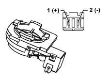
Connector pin out:
Pin 1 positive pole
Pin 2 negative pole
Front woofer speaker
Specifications
Its electrical specifiations are:
- band 80/8000 Hz
- resonance frequency 65±Hz
- nominal impedance 4 Ohm
- RSM power 20 W
- MAX power 40 W
- sensitivity 1W/1mt 90±2 db
Components
Location:
- The front woofers are fitted in the lower part of the doors
Type
- The woofer speaker is designed to enhance the bass and is made from a treated paper membrane, with a treated cloth centering device, a treated paper dust cover and an aluminium/paper moving coil support
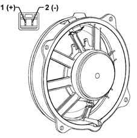
Connector pin out
Pin 1 positive pole
Pin 2 negative pole
Rear woofer speaker
Specifications
Its electrical specifiations are:
- band 80/6300 Hz
- resonance frequency 65±Hz
- nominal impedance 4 Ohm
- RSM power 20 W
- MAX power 40 W
- sensitivity 1W/1mt 90±2 db
Components
Location:
- The rear woofers are fitted in the rear panels, in the lower area
Type:
- The woofer speaker is designed to enhance the bass and it is made from a treated paper membrane, a treated cloth centering device, a treated paper dust cover and an aluminium/paper moving coil support.
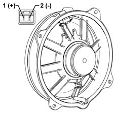
Connector pin out
Pin 1 positive pole
Pin 2 negative pole
Recommendations for fitting speakers
In order not to damage the speakers, some precautions should be taken when they are fitted and moved.
Recommended operations:
- Stack the speakers on one another when unpacking
- Place the speakers near metal parts In the case of very small parts, these could get into the gap and produce noises
- Twist the terminals once the electrical connection is fitted
- Rest on the speaker membrane during the fitting stages
- Perforate the speaker membrane with a screwdriver during the fitting stages
- Touch the cone (warning: it is one of the most delicate parts)
- Never let the speaker come into contact with solvents
Recommended operations:
- Always handle the speaker using the plastic structure without touching the membrane and other moving parts
- Discard speakers which been subject to impacts and visually inspect that there are no distortions
- Remove any protection before fitting them on the vehicle.
Aerial for model without preparation for radio telephone
Specifications
The electrical specifications of the support are:
- Operating voltage 10/16 V
- Operating temperature -30/to+80 °C
- FM band 87.5-108 MHz
- AM band 0.15-1..7 Mhz
Components
The aerial is fitted on the rear part of the roof and consists of: aerial, aerial support with amplifier and an aerial lead.
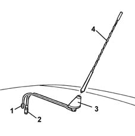
1 - Lead for aerial amplifier
2 - Aerial lead
3 - Aerial base with amplifier
4 - Aerial
Aerial for model with preparation for radio telephone
Specifications
The electrical specifications of the support are:
- Operating voltage 10 - 16V
- Operating temperature from -30 to +80°C
- FM band from 87.5 to 108 MHz
- AM band from 0.15 to 1.17 MHz
- Radio phone section
- Telephone band section 1800 MHz (D.C.S.)
- Frequency band from 1719 to 1880 MHz
- Rated impedance 50 Ohm
- Telephone band section 900 MHz (GSM ETACS)
- Frequency band from 880 to 960 MHz
- Rated impedance 50 Ohm
Components
The aerial is fitted on the rear part of the roof and consists of: aerial, aerial support with amplifier, aerial lead and telephone lead.
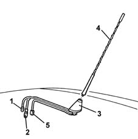
1 - Lead for aerial amplifier
2 - Aerial lead
3 - Aerial base with amplifier
4 - Aerial
5 - Telephone lead
Cdc system
Specifications
Function
A special changer makes it possible to load up to 10 discs which are then selected using the radio controls.
The changer only works if it contains at least one CD: the CDs should be inserted correctly and the flap should be properly closed.
Components
Location
The CD Changer is fitted in the luggage compartment on a special bracket on the left hand side
It is connected to the radio via a special lead
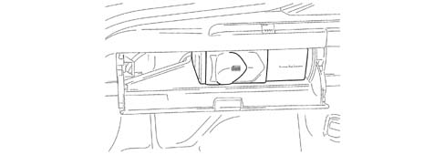
Cd changer lead
Specifications
Connector 1 (20 pin) ISO radio side:
- Pin 13 ASCI BUS from CDC to radio
- Pin 14 ASCI BUS from radio to CDC
- Pin 15+12 permanent
- Pin 16+12Vswitched
- Pin 17digital earth
- Pin 18audio earth
- Pin 19 CDC left audio
- Pin 20 CDC right audio
Connector 2 (13 pin) multipolar rapid attachment CDC side:
- Pin 2 connector screening
- Pin 3 +12 permanent
- Pin 4 +12Vswitched
- Pin 6 audio earth
- Pin 8 CDC right audio
- Pin 10 ASCI BUS from CDC to radio
- Pin 12 CDC left audio
- Pin 13 ASCI BUS from radio to CDC
- Connection to outer screening
- Digital earth coming from the radio
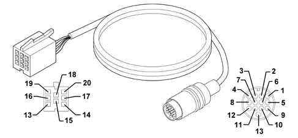
Applies to: all engines; all production periods; only with equipment: BOSE System
BOSE HIFI SYSTEM
A sophisticated 'Bose' HI FI system with special speakers and an outside amplifier is available on request.
Function
The system has been developed ad hoc for the vehicle: the acoustic properties of the passenger compartment have been carefully studied so that the amplifier and the speakers are perfectly suited to the vehicle: the sound is excellent throughout the passenger compartment.
In addition, the system blends in perfectly with the aesthetics of the vehicle, without taking up extra space.
The system is installed in the vehicle directly in production, without any operations afterwards: the cables are incorporated in the vehicle wiring.
It is therefore advisable not to modify the original system in any way (e.g. graphic equalizers, additional sub-woofers, extra amplifiers).
In addition, the system components (amplifier and speakers) should not be repaired individually, but can only be replaced with new components.
Performance
The Bose system guarantees the highest quality sound, with crystal clear high notes and deep, rich low tones.
With the following specifications:
- Volume compensation, through the 'active' Bose equalizing
- High/low tone control, from + 6dB to - 12 dB
- Fader control, through the Bose 'spatial' fader
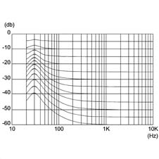
Optimum frequency response, according to graphics given below:
- Output distorsion < 2%, with all controls at maximum
- Dynamic output range > 112 dB
- Cassette reproduction interference reduction, with Dolby type B NR
COMPOSITION
Unlike the system fitted as standard, the Bose systme includes:
- front/rear speakers specific
- rear woofer speaker
- high power amplifier
The Bose system is completed by a microphone, located in the centre console, which detects background noise inside the passenger compartment: the signal sent for amplification allows the optimum regulation and equalization of output levels
The other components (radio, aerial, etc.) are the same as those on the system fitted as standard.
Location
The diagram below illustrates the location of the components.
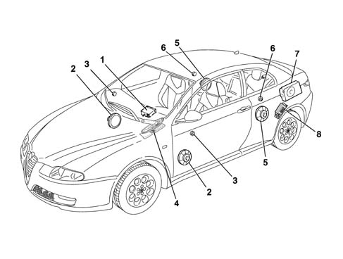
1 - Radio
2 - Front door mid-range speakers
3 - Front door tweeter speakers
4 - Ambient microphone
5 - Rear mid-range speakers
6 - Rear tweeter speakers
7 - Rear sub-woofer speaker
8 - Amplifier
COMPONENT DESCRIPTION
Speakers
Specifcations
The high fidelity BOSE speakers are composed of a magnetic ferrite core for both the mide range speakers and the tweeter, in addition, the mid range speakers have a treated paper membrane and textile material. The moving coil support is made from aluminium.
Rear woofer speaker
Specifcations
This is a high fidelity woofer speaker with a special bass box incorporated which diffuses the sound in an optimum manner preventing vibrations and interference.
It is located together with the amplifier on the left hand side of the luggage compartment.
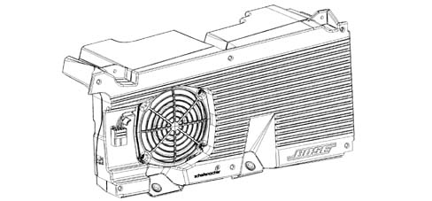
Amplifier
Specifcations
It is a 5 channel, hifi amplifier with 200W power, 4 analogue amplifiers and a 100W class D impulse amplifier.
The amplifier has 4 stereo channels for the speakers in the front and rear doors and a mono channel for the rear woofer.
The amplifier is equipped with a built in equalizer and compressor.
The high resolution equalizer is specially calibrated in the vehicle passenger compartment because it takes into account the vehicle absorption and reflection surfaces (seats, windows, dashboard, door panels) and the position of the speakers and the passengers.
The 'two stage' technology allows high power with compact dimensions and reduced heat emission compared with a traditional linear amplifier.
The amplifier is fitted with:
- an integrated signal processor, which actively adapts the bass;
- an active equalizer, with automatic electronic balancing of all outputs
- an integrated compressor which minimizes distortions
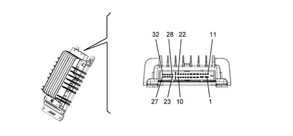
AMPLIFIER CONNECTION PIN OUT
PIN | SIGNAL |
|---|---|
1 | +30 |
2 | earth |
3 | + woofer 2 |
4 | - rear speaker left |
5 | + rear speaker right |
6 | enablement from radio |
7 | - front speaker left |
8 | - front speaker right |
9 | - rear speaker left |
10 | - rear speaker right |
11 | + woofer 1 |
12 | - woofer 1 |
13 | n.c. |
14 | n.c. |
15 | - woofer 2 |
16 | + rear speaker left |
17 | - rear speaker right |
18 | n.c |
19 | + front speaker left |
20 | + front speaker right |
21 | + rear speaker left |
22 | + rear speaker right |
23 | n.c. |
24 | n.c. |
25 | n.c. |
26 | - front speaker right |
27 | + front speaker right |
28 | n.c. |
29 | + microphone |
30 | - microphone |
31 | + front speaker left |
32 | - front speaker left |